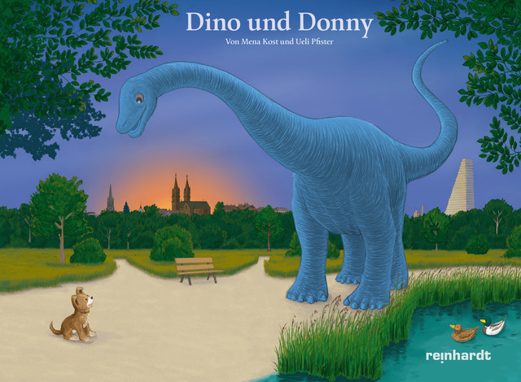
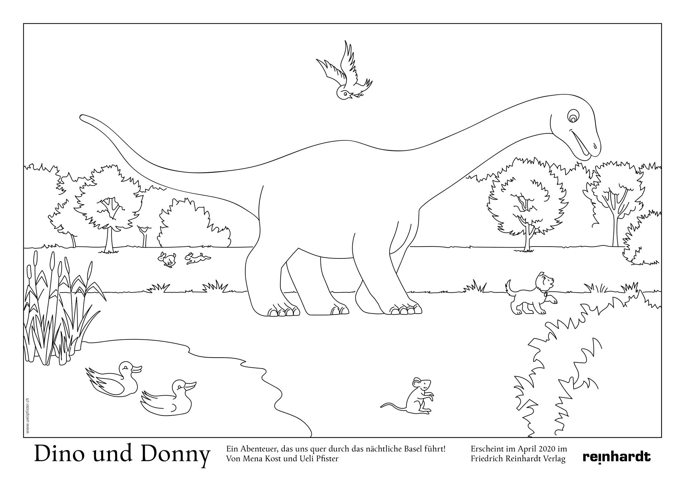
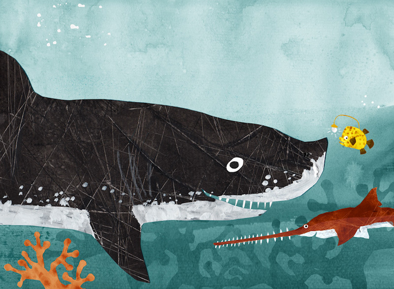

Dino und Donny
Ein Abenteuer, das uns quer durch Basel führt

Was passiert eigentlich in der Nacht, wenn alle schlafen? Mit dem
Bilderbuch «Dino und Donny» tauchen wir ein in den Zauber einer
nächtlichen Parallelrealität, in der ein Dinosaurier durch die Stadt
spaziert und einem kleinen Hund hilft, seinen Weg nach Hause zu
finden.
Hier weiter lesen.
Erscheint im Mai 2020 im Friedrich Reinhardt Verlag.
Medienberichte
Basellive 22.05.2020
Basellandschaftliche Zeitung 27.06.2020
Sie können das Buch hier bestellen.
Für Kinder gibt es hier eine Ausmalvorlage als pdf zum herunterladen.
Ausleben
Ein Porträt-Buch

Wie möchten Sie am liebsten sterben? Fürchten Sie sich vor dem Tod?
Kann man mit dem Tod Frieden schliessen? Gedanken an den Tod und ans
Sterben verschiebt man gerne auf später. Aber was, wenn «später»
jetzt ist?
Hier weiter lesen
Erscheint im März 2020 im Christoph Merian Verlag.
Sie können das Buch bestellen.
Ausleben
Medienberichte
"Mena Kosts Werk ist ein unglaublich bewegendes Buch mit ergreifenden Bildern von Annette Boutellier und wunderschönen Texten."
Franziska Laur, Basler Zeitung
"Ein Buch voller gesättigter Erfahrung, Weisheit und Witz."
Jacqueline Straub, aufbruch
"Entstanden sind Porträts, die auf ein paar wenigen Seiten einen intimen, aber nie voyeuristischen Einblick gewähren in ein ganzes Leben."
Sandra Leis, SRF 2 Kultur
Das Magazin Nr.10/2020
Radio SRF "Kontext" 26.03.2020
SPIEGEL online 10.05.2020
Radio rbb Kultur 24.05.2020
WDR 3, Kultur am Mittag, 28.05.2020
Basellandschaftliche Zeitung 14.03.2020
Basler Zeitung 30.03.2020
Curaviva Fachzeitschrift Nr. 3/2020
Spitex Magazin 2/20
Deutsche Gesellschaft für Photographie 03/2020
Bücher&Bilder 03/2020
Regio aktuell 05/2020
Badische Neueste Nachrichten 30.04.2020
Aufbruch 05/2020
20 Minuten Friday 11.05.2020
Aelterbasel.ch 05/2020
Kulturtipp 13/2020
Entlebucher Anzeiger 03.06.2020
Möchten Sie mehr wissen oder haben Sie Fragen? Dann kontaktieren Sie
mich gerne.
Kontakt
Hier mehr über das Buch erfahren.
Funzel, Reisszahn und Säge
Die abenteuerliche Reise zum Leuchtblumenfeld

Ein Unterwasserabenteuer für Kinder von 5 bis 7 Jahren: Die
Geschichte dreier Fische, die unterschiedlicher nicht sein könnten –
und trotzdem die allerbesten Freunde sind. Ein Buch über
Freundschaft, Mut, Hilfsbereitschaft und Algeneiscreme.
Hier weiter lesen
Erscheint demnächst im Neptun-Verlag.
Sie können das Buch per E-Mail (vor)bestellen.